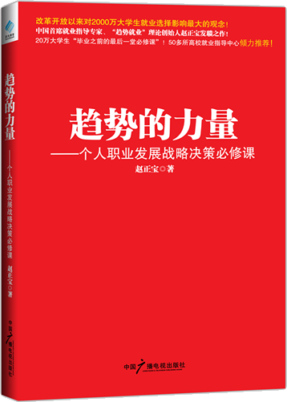

Zhao Zhengbao
"Career decision-making" trend "employment" founder of the theory
the founder of career College of vision .
Senior training instructors, occupation, employment guidance expert consultants.
Keynote lectures and training in more than 200 universities, has trained more than 200000 students who.
In the venture capital industry training and education for more than 12 years, engaged in the industry, occupation of many years of research, make employee training more than 300 enterprises and institutions.
The course is "trend of employment", "career decision-making", "industry analysis and corporate research", "simulation", "", "commercial negotiations resume delivery skills", "analysis and interview 26 questions", "job", "employment initiative mistakes and job trap".
